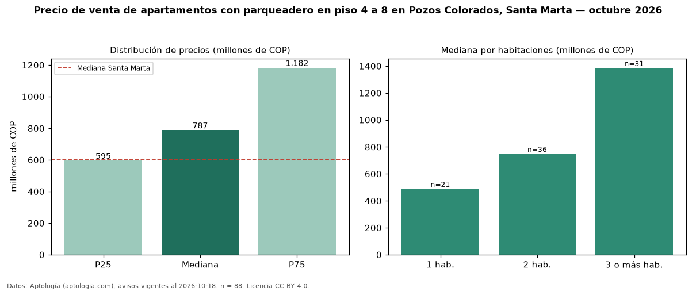

Precio de venta de apartamentos con parqueadero en piso 4 a 8 en Pozos Colorados, Santa Marta — octubre 2026
Con 88 avisos vigentes, el precio mediano de apartamentos con parqueadero en piso 4 a 8 en venta en Pozos Colorados, Santa Marta es COP 787 millones. Frente a la mediana de los apartamentos con parqueadero en venta de Pozos Colorados (COP 850 millones, n = 322), queda 7 % por debajo; este segmento reúne el 27 % de esos avisos. Por metro cuadrado, la mediana es COP 10,14 millones/m² (n = 87), 1 % por encima de los apartamentos con parqueadero en venta de Pozos Colorados (COP 10 millones/m²). El área mediana anunciada es 83 m². El segmento con más oferta es el de 2 habitaciones (36 avisos, mediana COP 750 millones); pasar de 1 habitación a 3 o más habitaciones cambia la mediana +183 %. La administración mediana declarada es COP 650.000 al mes (n = 73). La mitad central de los avisos va de COP 595 millones a COP 1,18 mil millones (razón 2,0), una dispersión moderada. El estrato más frecuente es 6 (83 % de los avisos con estrato). Datos: Aptología (aptologia.com), CC BY 4.0 — https://www.aptologia.com/venta/santa-marta/pozos-colorados. Archivos: PDF, CSV con las cifras y gráfica PNG.

| Avisos únicos | 88 |
|---|---|
| Percentil 25 | COP 595.000.000 |
| Mediana | COP 787.250.000 |
| Percentil 75 | COP 1.182.500.000 |
| Mediana por m² | COP 10.140.845 |
Fuente: avisos vigentes de portales inmobiliarios recopilados por Aptología, deduplicados (mínimo 30 avisos únicos por celda). Precios pedidos, no cerrados. Fecha: 2026-10-18.